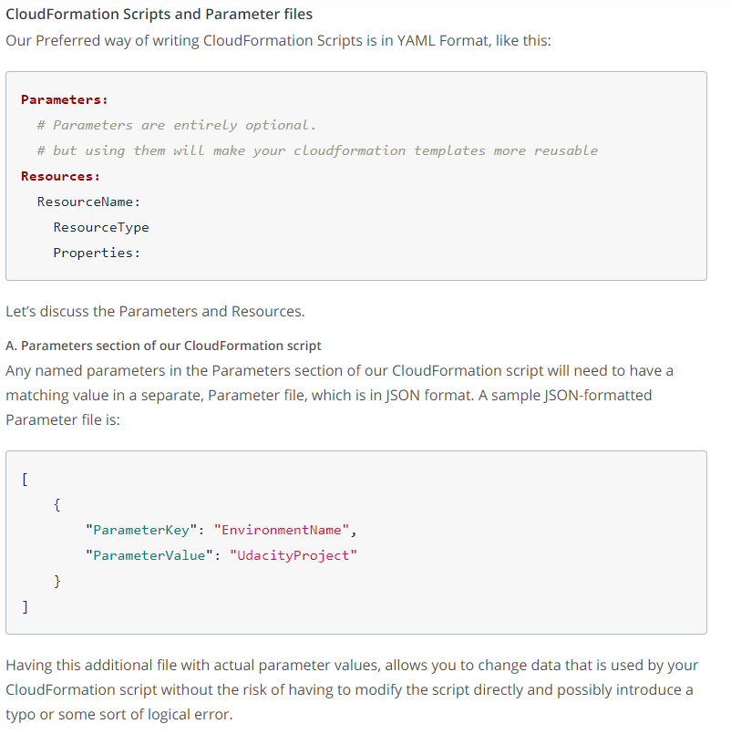
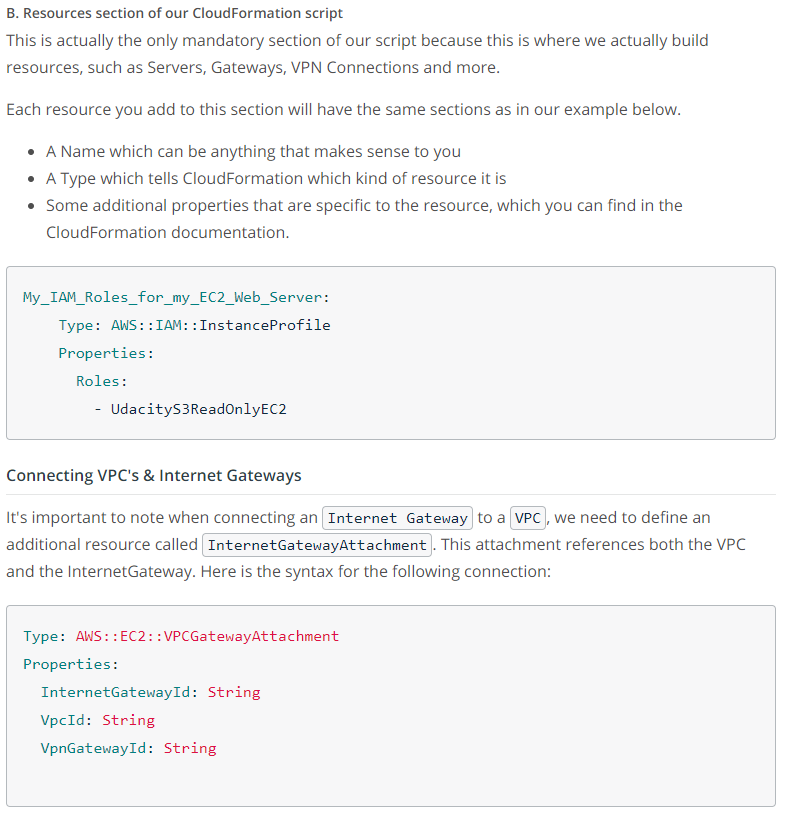
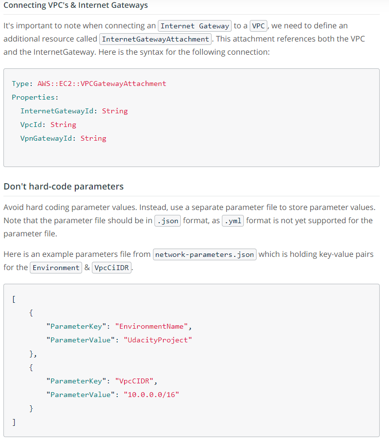

You may download the network's yaml file here for a reference.
Although descriptions are optional , Resource fields are required. Remember to include at least one resource (e.g., a VPC, an EC2 instance, a database) in the CloudFormation .yml script, otherwise it will give an error when you try to run the script.
   Calling CloudFormation
Refer to this AWS documentation to create subnet, and this link to create a NAT Gateway.
Routing is the action of applying routing rules to your network, in this case, to your VPC.
Refer to this this user guide to create Route Tables.
The output documentation can be referred here.
Outputs are optional but are very useful if there are output values you need to: